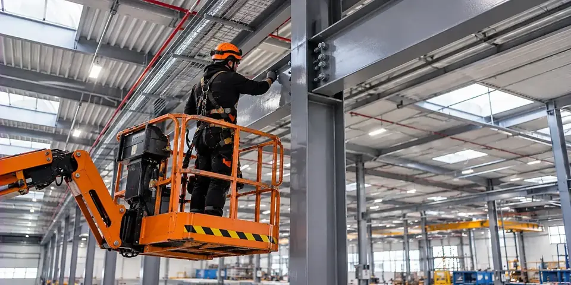

Prohlídky, servis a montáže konstrukcí
Odborné prohlídky, opravy a pravidelná údržba ocelových konstrukcí průmyslových objektů.
Ocelové konstrukce – prohlídky, opravy a servis
Prohlídky, opravy, montáže, zámečnické práce a ochranné nátěry ocelových konstrukcí.
Ocelové konstrukce – prohlídky, opravy a servis
HallPro Service zajišťuje komplexní technický servis ocelových konstrukcí průmyslových, výrobních, skladových a komerčních objektů.
Specializujeme se na běžné, podrobné a mimořádné prohlídky ocelových konstrukcí dle ČSN 73 2604 , opravy konstrukčních prvků a pravidelnou preventivní údržbu.
Provádíme jednorázové opravy, plánované servisní zásahy, montážní práce i odborné technické prohlídky ve spolupráci s autorizovanými statiky.
Rozsah našich služeb
- Běžné prohlídky ocelových konstrukcí dle ČSN 73 2604
- Podrobné prohlídky ocelových konstrukcí
- Mimořádné prohlídky ocelových konstrukcí
- Statické posouzení konstrukcí
- Kontroly technického stavu nosných konstrukcí
- Identifikace koroze a mechanického poškození
- Kontroly konstrukčních prvků a spojů
- Opravy poškozených ocelových konstrukcí
- Výměny a zesilování konstrukčních prvků
- Zakázkové zámečnické a svářečské práce
- Montáže a demontáže ocelových konstrukcí
- Obnova antikorozních nátěrů
- Protipožární nátěry a ochranné obklady konstrukcí
Preventivní servis ocelových konstrukcí
Pravidelné prohlídky a údržba pomáhají předcházet závažnému poškození nosných konstrukcí, rozvoji koroze a dalším technickým problémům.
Zaměřujeme se především na nosné prvky, konstrukční spoje, deformace, korozní napadení a stav povrchové ochrany.
Od prohlídky až po opravu
Neznáte aktuální technický stav ocelových konstrukcí ve vašem objektu? Provedeme odbornou prohlídku dle ČSN 73 2604, zdokumentujeme zjištěné závady a připravíme návrh jejich odstranění včetně cenové nabídky.
POPTAT servis konstrukce
Poskytujeme komplexní servis střech s důrazem na prevenci, rychlé řešení závad a dlouhodobou životnost střešních systémů. Od výměny střešního šroubu až po kompletní renovaci střešního pláště, hydroizolací a systémů odvodnění máte jednoho partnera, který se postará o technický stav celé střechy.
Zanechte nám kontakt a připravíme vám návrh servisního postupu.
Ozveme se obvykle do 24 hodin. Vstupní prohlídka objektu je zdarma a nezávazná.
- Prohlídka objektu a návrh řešení
- Protokol a fotodokumentace dle ČSN
- Cenová nabídka bez závazků
- Servis po celé České republice